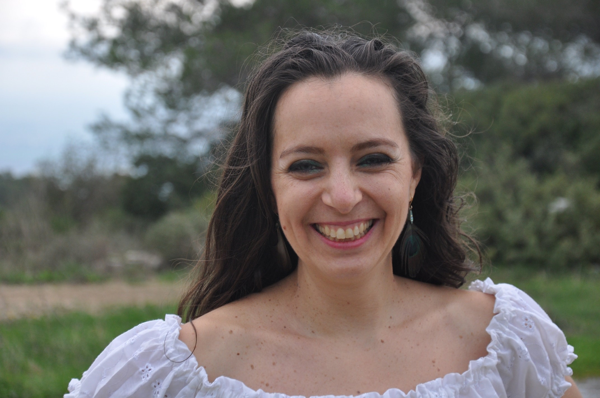
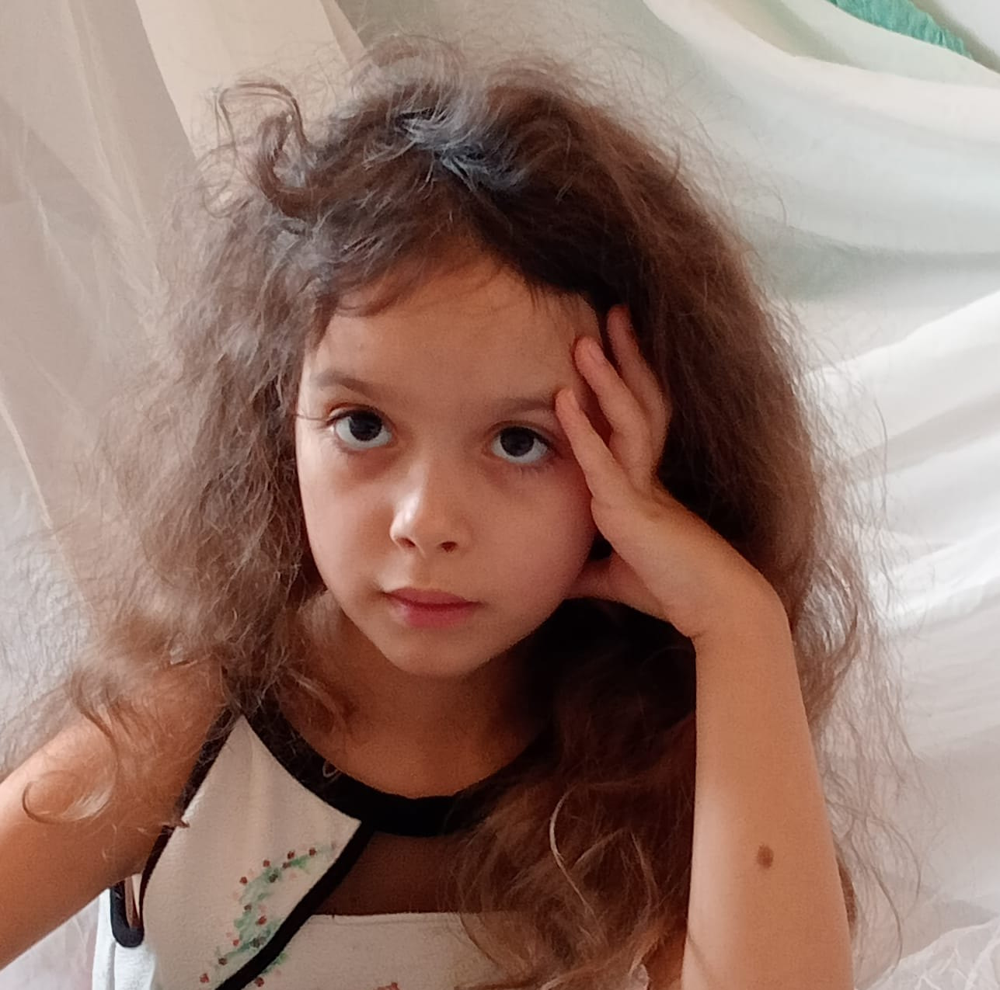

למה מים לפעמים מתנהגים כאילו יש להם רצון משלהם? נבדוק בניסוי מפתיע.
מי מוביל את הקורס?

אדריאן רוזנבאום, מנחה הקורס
מורה למדעים, רובוטיקה ואלקטרוניקה, חוקר את העולם עם עיניים נוצצות ועם נשמה של ילד.
אדי מביא איתו מעל עשור של הוראה בגובה העיניים, סקרנות שלא נגמרת, ואהבה עמוקה לטבע, לפיזיקה, למחשבים וללמידה מכל סוג.
הילדים והמבוגרים שפוגשים את אדי מגלים מישהו שמקשיב באמת – ומאמין בלב שלם ביכולת של אנשים ללמוד, להשתנות, ולחשוב לעומק.
הוא מחזיק יחד דיוק מדעי, התרגשות מהעולם, ופתיחות אמיצה מול שאלות שעדיין אין להן תשובה.

מעיין בן דוד – תומכת הקורס ויזמת "החצר של סבא וסבתא"
מורה לתנועה ויוצרת חוויות למידה בגוף ובנפש, עם גישה רגישה לילדים וניסיון עשיר בהנחיית קבוצות בגיל השלישי דרך תנועה ויצירה. נוכחת לאורך המפגשים כדי ללוות, לתמוך בתהליך הקבוצתי ולדאוג שיהיה כיף.

נגה בן דוד
שותפה להקמת "החצר של סבא וסבתא", הוגה רעיונות ונותנת רוח גבית ונחישות לאורך כל הדרך.